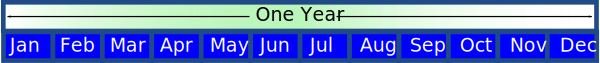

Months
There are twelve months in a year:

Here are the twelve months in detail:
| Month Number |
Month |
In 3 letters |
Days in Month |
|---|---|---|---|
| 1 |
January |
Jan | 31 |
| 2 |
February |
Feb | 28 (29 in leap years) |
| 3 |
March |
Mar | 31 |
| 4 |
April |
Apr | 30 |
| 5 |
May |
May | 31 |
| 6 |
June |
Jun | 30 |
| 7 |
July |
Jul | 31 |
| 8 |
August |
Aug | 31 |
| 9 |
September |
Sep | 30 |
| 10 |
October |
Oct | 31 |
| 11 |
November |
Nov | 30 |
| 12 |
December |
Dec | 31 |
February
The strangest month of all is February.
February has only 28 days, but on Leap Years February has 29 days!
How to Remember
You can remember how many days in each month using this rhyme:
| 30 days has September, April, June and November. All the rest have 31 Except February alone, Which has 28 days clear And 29 in each leap year. |
Or you can use the "knuckle method":
A knuckle is "31 days", and in between each knuckle it isn't.
And where you hands meet, the two knuckles are "July, August", which both have 31 days.
(Note: the last knuckle isn't used)
Example: October is on a knuckles, so it has 31 days
But November is not on a knuckle (and in this case has 30 days)
See The Days in Each Month
See the days in each month (use the arrows to change the month):
The Moon
 |
The months were originally based on the movement of the moon (the words moon and month are related), but this did not work out perfectly to one year. |
So they changed how many days in some months to make them all add up to one year.
Fun Facts!
Ancient Romans had 10 Months:
- Martius for the god Mars
- Aprilis (aperio is Latin for "open", and flowers blossom in this month)
- Maius for the goddess Maia
- Iunius for the goddess Juno
- Quintilis from Latin quinque meaning five
- Sextilis for six
- Septembris for seven
- Octobris for eight
- Novembris for nine
- Decembris for ten (remember "Decimal" means based on 10)
Then around 710 BC Numa Pompilius, the second King of Rome, added January (for the god Janus) and February (from Latin februum meaning purification).
Unfortunately this wrecked the nice numbering system of the later months.
Many years later (44 BC) Quintilis was renamed Iulius (July) in honour of Julius Caesar, and in 8 BC Sextilis was renamed Augustus (August) in honour of Augustus.